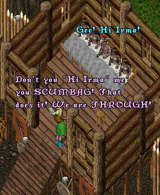

Fearlessly Irma presses on through the harsh
terrain, searching for her man!

Then finally, in the Inn in Papua Irma meets a traveller
who may have a clue to ImaNewbie's whereabouts
Thrilled with the news that ImaNewbie is still alive,
she rushes to be swept headlong into his arms once again.
